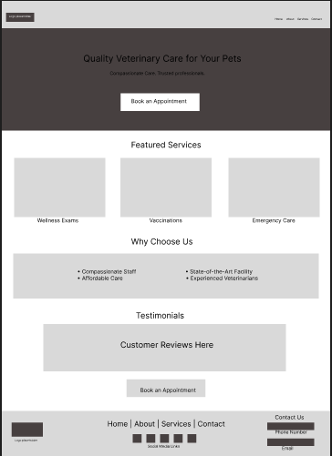

Research & Design

The original design suffered from clutter, weak visual hierarchy, and limited accessibility cues. The redesign employs thoughtful color-coding, icons, and structured layouts to improve readability and usability. Prioritizing clear navigation and easy appointment scheduling significantly enhances the user experience.

Warm imagery, clean typography, and generous spacing make the veterinary services feel approachable and reliable, while the structured UX process—from research to prototype—delivers meaningful improvements that go beyond surface-level design.